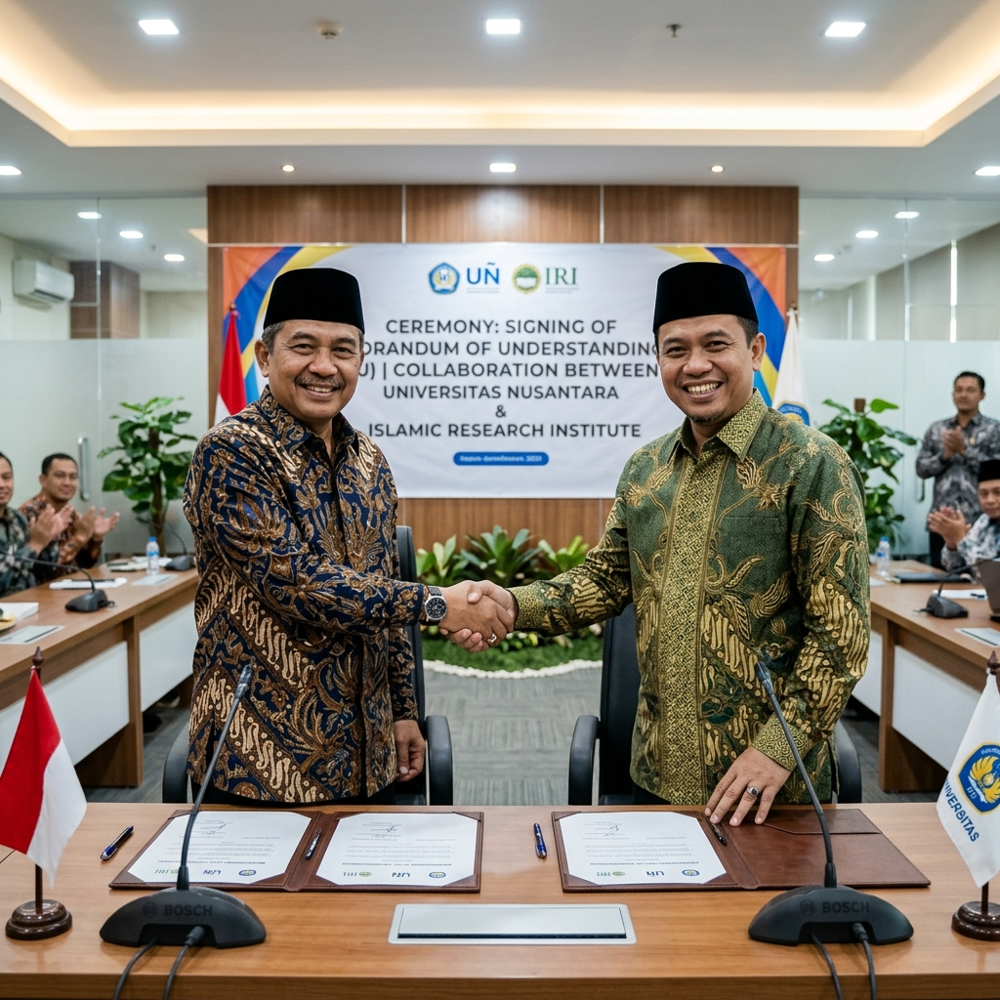

Kerjasama dengan Universitas Islam Terkemuka

SIDOARJO - PPTQ AL WAHYU terus memperluas jaringan akademik demi masa depan para santrinya. Pada tanggal 15 Mei 2026, telah ditandatangani Memorandum of Understanding (MoU) kerjasama strategis antara PPTQ AL WAHYU dengan salah satu Universitas Islam terkemuka di Indonesia.
Kerjasama ini berfokus pada penyediaan jalur penerimaan khusus bagi santri lulusan PPTQ AL WAHYU yang ingin melanjutkan pendidikan ke jenjang universitas. Penandatanganan MoU ini dilakukan di ruang pertemuan utama oleh pimpinan pondok pesantren dan perwakilan rektorat universitas.
"Kami sangat bangga bisa menjalin kemitraan dengan PPTQ AL WAHYU. Standar kualitas hafalan dan karakter yang dimiliki para santri di sini membuat kami yakin mereka akan menjadi mahasiswa-mahasiswa berprestasi yang berintegritas tinggi," kata perwakilan universitas dalam sambutannya.
Poin-Poin Utama Kerjasama
Kemitraan yang disepakati ini melingkupi beberapa program strategis, di antaranya:
- Beasiswa Jalur Prestasi Tahfidz: Beasiswa penuh (SPP dan biaya kuliah) bagi alumni pesantren yang memiliki hafalan 30 Juz Mutqin dan lulus tes kelayakan akademis.
- Jalur Undangan Khusus: Kuota khusus masuk universitas tanpa tes tertulis bagi santri berprestasi di jenjang SMA Al Wahyu.
- Pelatihan & Sertifikasi Guru: Program pendampingan metode pengajaran dari universitas untuk meningkatkan kualitas asatidz di pesantren.
Dengan adanya kemitraan ini, PPTQ AL WAHYU berharap para santri semakin termotivasi untuk giat menghafal sekaligus mempersiapkan diri secara akademis guna menyongsong cita-cita di masa depan.